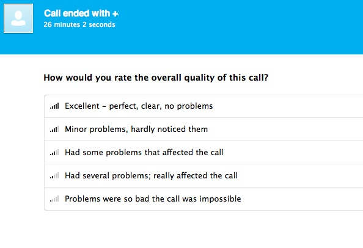
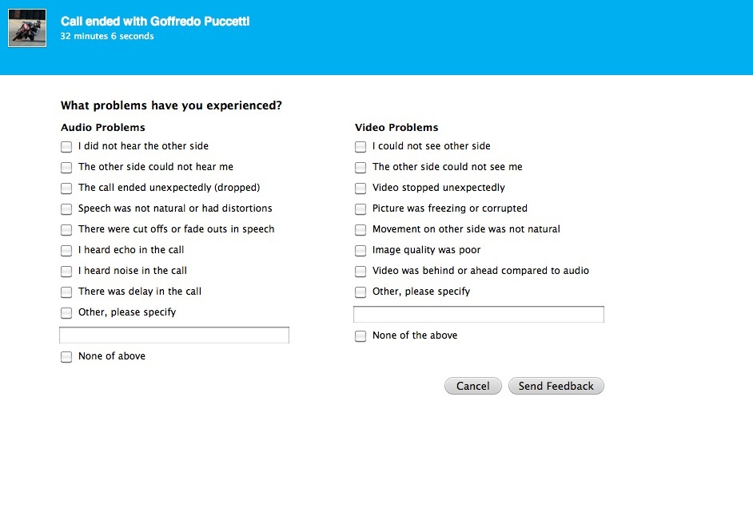

After most calls, Skype requests its users to fill in a questionnaire concerning the quality of the last call. The questionnaire has the declared purpose of improving the quality of the call. “Requests” is a bit of an euphemism. You must take an action in order to make the questionnaire pop-up window disappear. On the pop-up window you are given five choices, from “Excellent” to “Problems were so bad the call was impossible.”
Now look at a subtle behavioral effect. If you choose « Excellent », no more questions are asked. But for any of the other answers, yet another window pops up, proposing a number of choices for explaining what went wrong with your call.
This is questionnaire overload. It invites a simple strategic response: always tick « Excellent » on the first screen, so as to avoid further delays. This is an unwelcome consequence of the questionnaire design.